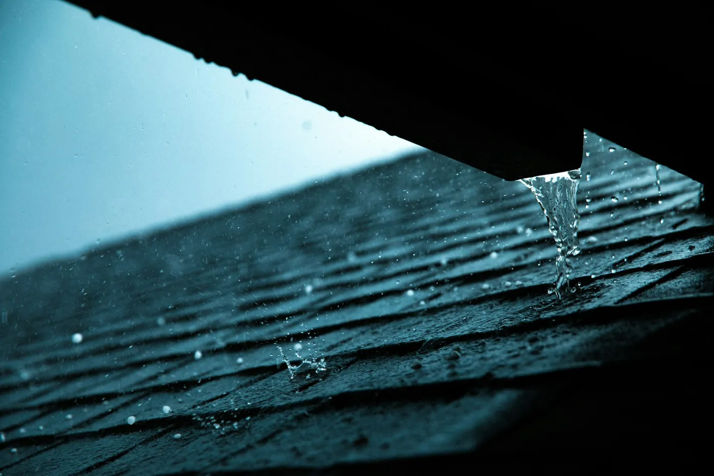

Roof repairs cover a lot of ground. It can be anything from a slow leak over the kitchen to a broken gutter that dumps snowmelt against the foundation. We're fully licensed, insured and certified to repair both residential and commercial roofs, and our crew carries the tools, equipment and materials to handle the job on the first trip.
A simple leak can turn into a major problem if it isn't handled quickly. Water soaks the deck, then the insulation, then the drywall. So we move fast, and we fix the cause rather than smearing tar over the symptom.
Roof repairs we handle in Salt Lake City
Here's what most calls turn out to be. If you don't see your problem, call anyway. Chances are we've fixed it.
| Repair | What it usually looks like |
|---|---|
| Shingle replacement | Shingles missing after wind, cracked, curled or torn at the tabs |
| Roof leaks | Ceiling stains, drips in the attic, wet insulation, peeling paint near the ceiling |
| Storm and tree damage | Branches on the roof, dented flashing, punctures, lifted edges |
| Roof patching | A damaged area on an otherwise healthy roof, shingle or flat |
| Roof inspections | Buying or selling a home, after a big storm, or before winter |
| Waterproofing | Recurring leaks on low-slope roofs, balconies and transitions |
| Gutter repairs | Sagging runs, leaking seams, downspouts pulling away |
| Drainage solutions | Ponding water on flat roofs, ice building up at the eaves |

Roof leak repair: find the source, not the stain
Water rarely comes through the ceiling right under the hole. It lands on the deck, runs along a rafter or the top of the insulation, and shows up several feet away. That's why patching the spot above the stain so often fails.
On Salt Lake City homes the usual culprits are the same few places:
- Flashing around chimneys, skylights, plumbing vents and where a roof meets a wall
- Ice dams at the eaves, where meltwater refreezes and backs up under the shingles
- Worn sealant and seams on flat and low-slope roofs
- Clogged gutters and drains that let water and ice build up on the roof
We trace the path from the stain back to the entry point, fix that, and check the decking around it for rot. If the leak keeps coming back, it's usually a ventilation or ice-dam issue, and we'll say so. North Dakota State University Extension puts it plainly: heat escaping into the attic melts the snow, and that water freezes again when it reaches the colder eaves.
Storm and tree damage
Spring wind, summer hail and heavy wet snow all take a toll. After a storm, start from the ground. Look for shingles in the yard, dents in gutters and flashing, and branches on the roof. Take photos from a safe spot. They'll help us, and they'll help with an insurance claim if you decide to file one.
Please don't climb up on a wet or icy roof. Call us, and we'll check it, secure anything loose and give you a written repair estimate.
Repair or replace? How we decide
We'll always tell you which way we'd go and why. This is the rough line we use:
| Usually a repair | Usually time to replace |
|---|---|
| Damage is in one spot (a storm, a branch, one vent) | Leaks keep showing up in new places |
| A few shingles are missing or cracked | Shingles are curling or bald across the whole roof |
| Flashing or a seal has failed | The deck feels soft or sags |
| The roof is well inside its expected life | The roof is near or past the end of its warranty |
Not sure how old your roof is or how much life it has left? Our guide on how long roofs last in Utah walks through it, and our residential roofing page covers new roofs and re-roofing.
Gutters, drainage and snow
It's important that your gutters and drainage systems work. If they don't, water, snow and ice build up and cause major problems for you and your roof. A gutter full of leaves in November is an ice dam waiting to happen in January.
We repair and re-hang gutters, fix downspouts and sort out drainage on flat roofs where water sits in low spots. For your peace of mind, let us inspect the whole roof while we're up there and repair anything else we find.
Commercial roof repairs
A leak in a commercial building isn't just a stain. It can ruin inventory, shut down a room or damage a tenant's equipment. We repair flat and pitched commercial roofs and work around your hours so your business keeps running. For ongoing care, our commercial roofing maintenance program helps property owners stretch the life of their roofs.
A property manager with more than 30 years of experience told us we were "especially responsive when repairs are needed to stop damage to tenant spaces and buildings." That's the standard.
Why property owners call us for roof repair in Salt Lake City
- Licensed, insured and certified for residential and commercial work
- A+ rating with the Better Business Bureau
- Quick response on leaks, with an emergency line: (801) 671-2282
- Free estimates and written bids
- Waterproofing know-how most roofers don't have. It's in our name.
Roof repair questions
How can I fix cracks in my roof?
Small cracks in a shingle or around flashing can often be sealed or the single shingle replaced. Cracks across many shingles usually mean the roof is drying out and aging. Have a roofer look first: a crack you can see from the ground is often a sign of more damage up close.
What does roof repair mean?
Roof repair means fixing part of a roof instead of replacing all of it: a leak, a few missing or broken shingles, failed flashing, a torn spot in a flat roof membrane, or a damaged gutter. If the roof is sound overall, a repair is usually the smarter spend.
How fast can you come out for a roof leak?
We know a leak can't wait, so we respond quickly. Call (801) 326-9708 during business hours, Monday to Saturday from 9 to 5. If water is coming in right now, call our emergency line at (801) 671-2282 and we'll help you limit the damage.
Do you repair commercial flat roofs?
Yes. We repair flat and low-slope commercial roofs as well as pitched roofs, and we can set up a maintenance program so small problems get caught before they reach tenant spaces, inventory or equipment. See our commercial roofing page for more on how we work with property owners.
Should I repair or replace an old roof?
Repair makes sense when the damage is in one area and the rest of the roof is in good shape. If leaks keep showing up in new places, shingles are curling everywhere, or the deck feels soft, replacement is usually cheaper over time. We'll tell you which one we'd pick.
Is the roof repair estimate free?
Yes. We'll look at the roof and give you a free estimate. Call (801) 326-9708 or send the quote form with a short description and, if you can, a photo of the problem area.